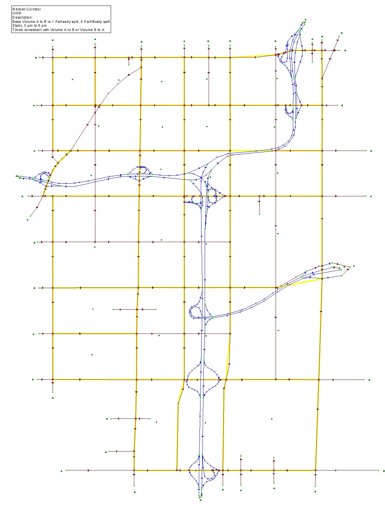

Windowing with OD table estimation from traffic counts in project-level traffic forecasting
# Objective
Windowing is a fairly old network coding method for highway projects that has only recently become practical due to the development of new techniques for finding a synthetic OD table from traffic counts. A “window” is a small, compact portion of a much larger network. The major challenge of building a good window is in finding a set of flows for those trips that pass entirely through the window.
# Background
The notion of windowing was first popularized in NCHRP Report 187, but its applicability was limited to very small areas. The recent availability of software for synthetic O-D table estimation has permitted larger windows by eliminating a tedious trial-and-error process to calculate traffic demand.
# Guidelines
Windowing is a method for short-term travel forecasting. It can be used for assessing site developments, new roads, road widenings, and other actions where the O-D patterns are relatively constant.
Some projects are in locations that are unsuitable for creating windows. For a window to work correctly, there must be a reasonable expectation that any trip diversions owing to a project will remain entirely within the window. Windows still need to be substantially smaller than a full region. Very large windows can impose a substantial burden on data collection and synthetic OD table estimation.
Windowing should follow these steps, in the absence of a vehicle re-identification survey.
- Step 1. Determine the geographic extent of the window. The window should fully contain the project, and it must extend sufficiently outside the project to capture all diverted trips from the project. Depending upon the scope of the project and the amount of anticipated congestion, trip diversions may extend as much as several blocks, or even miles, from the project.
- Step 2. Determine if the window is sufficiently large for E-I, I-E and I-I trips. If so, there must be internal zones. These internal zones should have their trip generation characteristics set according to good travel forecasting practice. See NCHRP Report 365 or NCHRP Report 716 for advice on trip generation. It is advisable to include an automobile occupancy factor in the trip generation equations, so that the internal zones are generating vehicle trips, not person trips. It is also advisable to include time of day factors so that trip generation is for the exact time period of the forecast and that trip ends are origins and destinations (not productions and attractions).
- Step 3. Determine all points where a significant amount of traffic will enter or leave the window. These points will be external zones.
- Step 4. Using whatever turning movement data is available, determine the percent of left turns and the percent of right turns at traffic controlled intersections. It will be necessary to later check the assigned turning movements to make sure that the OD table is reasonable.
- Step 5. Obtain all traffic counts for the window. There is a need for traffic count(s) at each external zone.
- Step 6. Build a seed O-D table for the window, including both internal and external zones. Use a doubly-constrained gravity model with an exponential friction factor function. The measure of impedance is the number of turns between an origin and a destination (multiplied by a convenient constant, such as 10). This can be accomplished by placing a 10-minute penalty on all turns in the network and all setting link impedances to a small number, such as 0.01 minutes. Do not penalize through movements or include other node delays. The parameter of the exponential friction factor function should be set to closely replicate the number of turns at intersections, once the seed table is assigned to the traffic network for the window. This is a trial-and-error process. With a turn penalty of 10, a good starting point for the parameter is 0.07. A smaller parameter will imply more turns, and a larger parameter will imply fewer turns.
- Step 7. Estimate the OD table from ground counts on a network with true impedances (that is, no exaggerated turn penalties). Use the seed OD table from Step 6 and any available ground counts. OD table estimation requires specialized software. It is recommend that the OD table be estimated using generalized least squares or weighted least squares. Parameters must be set so that the estimated assigned volumes are no closer to the ground counts than the error in the ground counts, themselves. If possible, estimate the OD table using an equilibrium assignment method. (When an OD table is estimated with equilibrium traffic assignment, the process is sometimes called a “bi-level estimation”.) The estimated OD table should be checked for reasonableness, including its ability to roughly replicate the number of turns, in total, throughout the network.
- Step 8. Develop alternatives for the window. Each alternative will be a different network, but will use the same OD table and the same parameters.
- Step 9. Assign the estimated OD table to the alternative networks using equilibrium traffic assignment. Compile performance measures for each alternative, and take note of any traffic hot spots.
A vehicle re-identification survey can provide all or some of an OD table for a window without internal zones, after some processing. (See Working with vehicle re-identification data for details.)
# Advice
The Milwaukee/Mitchell window that is described in NCHRP Report 765 should be considered a fairly large window. This window covers about 13 square miles and contains 25 internal zones, 39 external stations and 288 street links (one-way or two-way). See below for an image of the Milwaukee/Mitchell window.

Network windows are sufficiently small that it should be possible to compute node delays at all traffic controlled intersections according to procedures similar to those found in the Highway Capacity Manual. For example, the Milwaukee/Mitchell window has 110 traffic controlled intersections. Most of the signals in this window were “adaptive”, that is their signal timings were simulated based on the amount of traffic at the intersection. It is possible to implement a dynamic traffic assignment (DTA) for a window. To do so, there must be a dynamic OD table. A dynamic OD table resembles a series of static OD tables, but there is a separate table for trips starting in each time interval. There are two possibilities for creating a synthetic dynamic OD table.
- Best Possibility: Obtain a dynamic OD table directly from “dynamic” traffic counts, specifically counts for each time interval to be simulated. Specialized software is required.
- Second Best Possibility: Factor a static OD table into a dynamic OD table by using a constant factor for each time interval. Constant factors may be obtained from a sample of counts from highways within the window. (Software is available to estimate optimal constant factors directly from traffic counts, which may produce slightly better results, in some cases.) The second best possibility is appropriate only when total time period of the simulation is short. For windows with no internal zones, there are two other possibilities.
- Third Possibility: Obtain an empirical, dynamic OD table from a vehicle re-identification survey. (See Section Working with vehicle re-identification data for details.)
- Fourth Possibility: Obtain a dynamic OD table by Fratar factoring of a static OD table to match traffic counts along roads leading to or coming from external stations.
It is important to carefully inspect the paths that vehicles must take to reach any zone or external station, especially those at the edge of the window. It is possible to inadvertently omit important road segments that are just outside the window, but carry substantial amounts of traffic from within the window.
# Items to Report
- Traffic volumes
- Traffic speeds
- Delays at selected locations
- Measures of Effectiveness
# References
NCHRP Report 765 (in particular, see the windowing case study in Chapter 11).